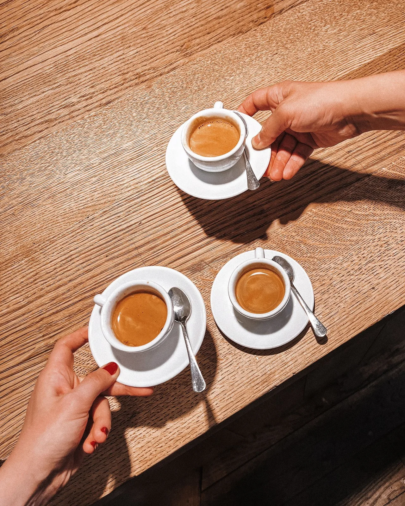
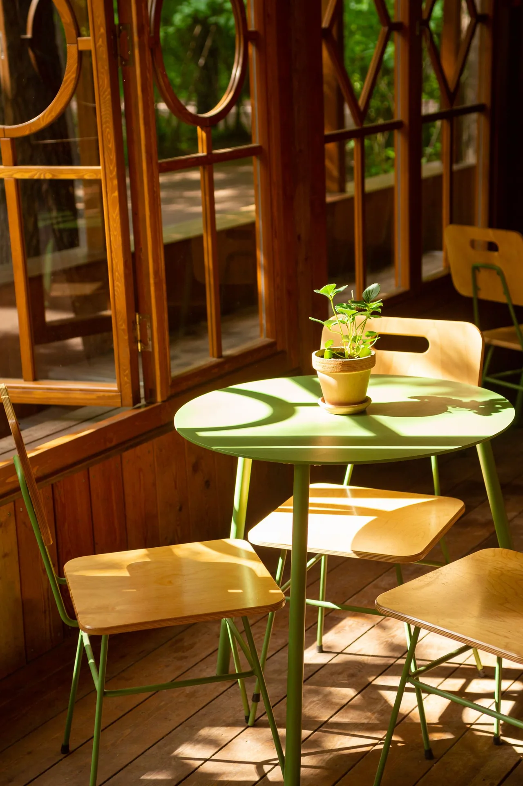
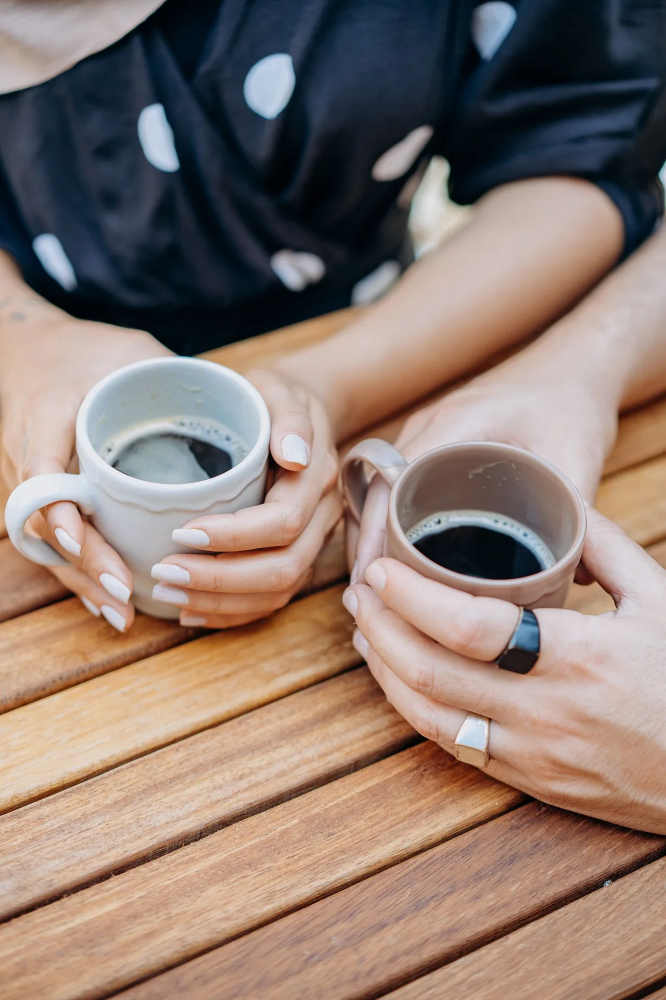

Kaffee. Freunde. Ganz lagano.

Ein Ort für guten Kaffee, lange Gespräche und ein Stück Balkan mitten in Sindelfingen.
Getränkekarte ansehen Am Marktplatz. Mitten im Leben.Ein bisschen Balkan.
Ganz viel Zeit.
lagano — ganz entspannt.
Auf dem Balkan gehört zum Kaffee das Gespräch. Man setzt sich, trifft Freunde und bleibt noch ein bisschen.
Dieses Gefühl bringen wir nach Sindelfingen. Mit Kaffee, Cockta, Cedevita und einem Platz für gute Gesellschaft.


Guter Kaffee. Gute Leute. Kein Stress.
Noch auf einen Kaffee?
Wir sehen uns am Marktplatz.
Marktplatz71063 Sindelfingen
Route öffnen (öffnet in neuem Tab)Vorher in die Karte schauen
Öffnungszeiten
- Montag – Donnerstag
- 09:00 – 22:00
- Freitag – Samstag
- 09:00 – 23:00
- Sonntag
- 10:00 – 21:00